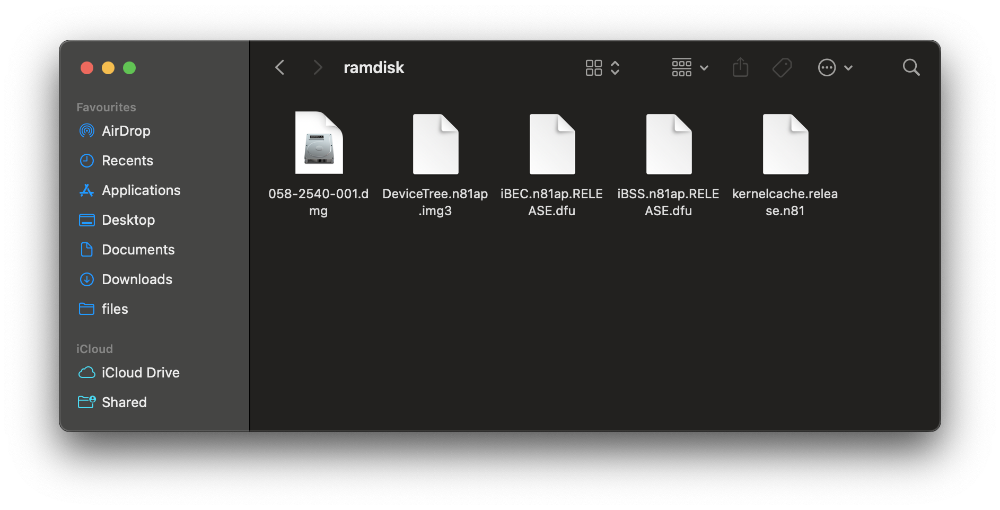

Making Ramdisk for iPhone / iPod / iPad
1) Downloading Bootloaders from ipsw.me
Most of restore file for device are about 3-6 GB file size. So without downloading all file
we can download the specific Bootloaders for device. Following bash script can be used to download.
Replace the deviceid varriable and use the ./pzd file to get specific files .
deviceid=iPhone5,2
#deviceid=$(irecovery -q | grep PRODUCT | sed 's/PRODUCT: //')
ipswurl=$(curl -sL "https://api.ipsw.me/v4/device/$deviceid?type=ipsw" | ./jq '.firmwares | .[] | select(.version=="10.3.3")' | ./jq -s '.[0] | .url' --raw-output)
echo "downloading Manifest"
./pzb -g BuildManifest.plist "$ipswurl"
#./pzb -g "$(awk "/""${replace}""/{x=1}x&&/kernelcache.release/{print;exit}" BuildManifest.plist | grep '' |cut -d\> -f2 |cut -d\< -f1)" "$ipswurl"
./pzb -g "$(awk "/""${replace}""/{x=1}x&&/iBSS[.]/{print;exit}" BuildManifest.plist | grep '' |cut -d\> -f2 |cut -d\< -f1)" "$ipswurl"
./pzb -g "$(awk "/""${replace}""/{x=1}x&&/iBEC[.]/{print;exit}" BuildManifest.plist | grep '' |cut -d\> -f2 |cut -d\< -f1)" "$ipswurl"
#./pzb -g "$(awk "/""${replace}""/{x=1}x&&/DeviceTree[.]/{print;exit}" BuildManifest.plist | grep '' |cut -d\> -f2 |cut -d\< -f1)" "$ipswurl"
You need to download the Following files -> RestoreRamdisk.dmg / kernelcache / iBSS / iBEC / Devicetree / Applelogo

2) Decrypting files.
Unpacking iBSS. You need to get iv and key for decrypt the files this need for all files. you can get this from iphonewik.
This and example for decrypting iBSS.
xpwntool iBSS.n81ap.RELEASE.dfu iBSS -k 1e68d69064ca17c6717be4fa4ff09a71eba1ad0af2a96df4b99a69f6e7258058 -iv daafc6ddd42c8f807000b9c1dd453236
Now you want to patch the iBSS .In this case there is shsh signed checking on SecureRom file so in this case we are patching it to boot as unsigned.
We are using iBoot32Patcher for patching.
iBoot32Patcher iBSS.raw iBSS.patched -r
Unpacking iBEC.To unpack iBEC you also need iv and key .
This and example for decrypting iBSS.
xpwntool iBEC.n81ap.RELEASE.dfu iBEC.dec.img3 -k 12a5192b4a2e860a76e9368e18e182e5f9f4809dcba62098fcbbaa63ef998a3c -iv fb44e5dbd3eb75d20f83c0f14d452346
Patching iBEC.
We are using iBoot32Patcher in this case also.
iBoot32Patcher iBEC.raw iBEC.patched -r -d -b "rd=md0 -v amfi=0xff cs_enforcement_disable=1"
In here boot args are contain on "".
rd=md0 is meaning booting Ramdisk mode . this opation you can choose which boot conatiner to boot.
-v is meaning enableing verbose boot on ramdisk boot.